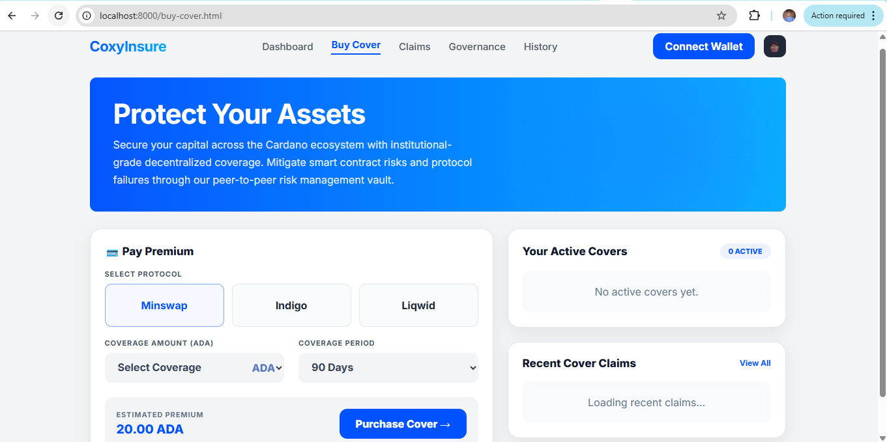

CoxyInsure User Help Documentation.
6. Buy Cover and Active Cover Tracking
The Buy Cover page is where the user purchases insurance protection. In your current implementation, cover purchase is based on predefined protocol-specific plans rather than open-ended freeform calculation.
6.1 Cover Purchase Model
- Minswap uses a fixed duration and tiered coverage ranges.
- Indigo uses a different fixed duration and its own premium ranges.
- Liqwid uses the longest duration and corresponding premium tiers.
6.2 How to Buy Cover
- Open the Buy Cover page.
- Select a protocol card.
- Choose a coverage tier from the dropdown menu.
- Review the automatically displayed premium.
- Click Purchase Cover.
- Approve the wallet transaction. The premium is deposited into the pool and the cover purchase is saved in the backend.
6.3 Active Cover Tracking
Once purchased, the cover appears in the active cover panel. Cover records typically show protocol, coverage amount, premium amount, status, and expiry. Status tracking may include active, expired, or claimed.
Tip: The buy cover page also pulls recent claim activity and can help users understand live protocol usage.
